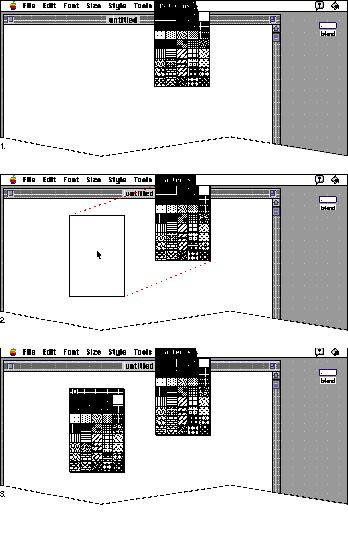
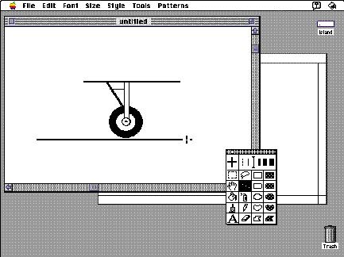

|
Tear-Off MenusA tear-off menu allows users to move a menu around the screen like a window. Tear-off menus save desktop space because the user can place them on top of a document or move them to a convenient position. If you implement a tear-off menu rather than a fixed palette in a window, you allow the user to have a larger workspace in document windows. Users can also choose to leave the menu in the menu bar, or tear it off and close it when necessary. Tear-off menus give the user more flexibility than fixed palettes do.When the user drags a tear-off menu three pixels away
from the menu bar, Figure 4-54 Using a tear-off menu  |
|
|
The user can choose an item from a tear-off menu simply by
pulling down the menu like any other menu, then dragging the pointer to the desired item and releasing the mouse button. You need to provide visual feedback about the current selection regardless of the content of the tear-off menu. In a tear-off menu that contains tools, highlight the currently selected tool. In a tear-off menu that contains patterns or colors, you can outline the currently selected item and include a preview area that shows that item. When the user clicks a new item, change the selection to that item. For tear-off menus that contain text items such as buttons, a single click selects the item. You also need to provide tracking feedback in tear-off menus. That is, as the user drags over the items in a tear-off menu, each item should be highlighted or outlined when the pointer is over it. Only one item can be active at a time. A tear-off menu behaves the same way when it is attached to the menu bar and when it is torn off and on the desktop. Tear-off menus behave like utility windows and document windows. Users can drag them around the screen and close them with a close box. Tear-off menus have a drag region with a 25 percent black-and-white pattern and a close box. Tear-off menus are always on top of document windows. If your application can have more than one menu torn off at a time, then you must determine their order of appearance based on user actions. Figure 4-55 shows an example of a tear-off menu on top of a window. |
|
Figure 4-55 A tear-off menu on top of a document
window
 |